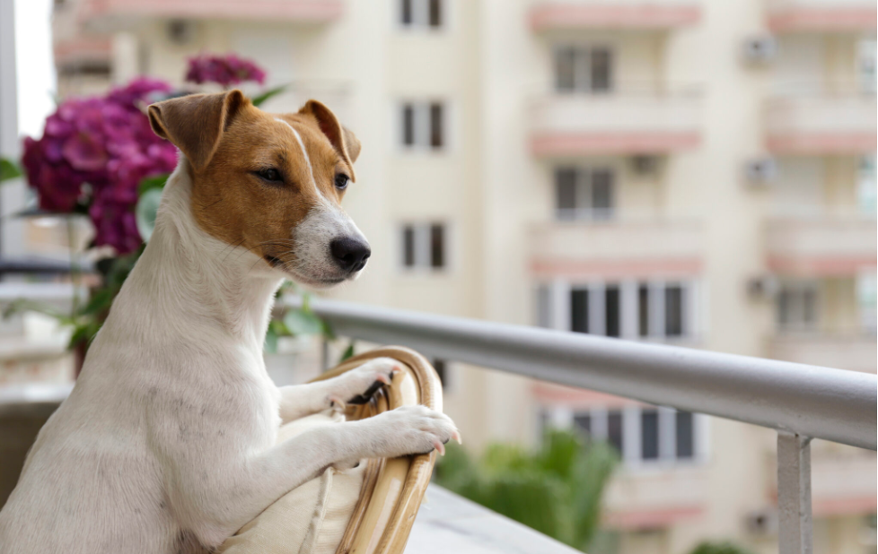

<body>

<div class="container">
  <div class="main-container">

    <div class="content-container">
      <div class="image-container">
        <h1>What Are The Best Dog & Puppy Breeds for Apartments?</h1>
        
      </div>

      <div *ngIf="!isFullTextShown">
        <p> No yard? Small space? No problem. If you live in an apartment and are looking to adopt a dog, some breeds
          and certain dog characteristics may do well in cozy quarters.

          Which are the best indoor dogs? Every pet is an individual, and dogs both large and small can do quite well in
          apartments or in a small house. Those that tend to thrive, however, are usually those that lean to the calm
          and quiet side.

          A number of breeds can fit the bill for being comfortable in smaller spaces (and plenty of adoptable pets,
          too!). Here’s a quick list at-a-glance, if you'd like a place to start:
        </p>
        <button (click)="toggleTextDisplay()" class="show-button" mat-button>Show More</button>
      </div>

      <div *ngIf="isFullTextShown">
        <p> No yard? Small space? No problem. If you live in an apartment and are looking to adopt a dog, some breeds
          and certain dog characteristics may do well in cozy quarters.

          Which are the best indoor dogs? Every pet is an individual, and dogs both large and small can do quite well in
          apartments or in a small house. Those that tend to thrive, however, are usually those that lean to the calm
          and quiet side.

          A number of breeds can fit the bill for being comfortable in smaller spaces (and plenty of adoptable pets,
          too!). Here’s a quick list at-a-glance, if you'd like a place to start:
        </p>
        <h1>Small apartment dog breeds</h1>

        <p>
          Why do small dogs make great apartment pets? They don’t take up a lot of room, can typically get enough
          exercise with indoor play, and you can pick them up and carry them easily if needed. Just know that size isn't
          the only indicator that a dog will do well in small spaces, and make sure you're focusing on the dog's
          personality as well.
        </p>

        <h2> Cavalier King Charles Spaniel</h2>
        <p>Cavalier King Charles Spaniels weigh in around 13-18 lbs. They are sociable and friendly to most pets (and
          people) they meet.

          <i>  Tips: The coat of a Cavalier King Charles Spaniel requires a little extra attention, so make sure you have
          time for brushing or regular visits to the groomer.  </i> </p>

        <h2> Bichon Frise</h2>
        <p>What is a good hypoallergenic apartment dog? While no dog is 100% hypoallergenic, consider the Bichon Frise.
          They may be better tolerated by those with allergies and typically weigh around 12-18 lbs. Many are responsive
          to training, and they’re known for being sweet, sensitive and cuddly.

          <i>  Tips: Bichon Frises may have some barking tendencies, but early training can help in that regard. They’re also
          good with children and other pets. </i></p>
        <h2> French Bulldog </h2>
        <p>Looking for a dog who loves to laze about? French Bulldogs are generally happy snuggling on the couch, and
          they have a silly, side that makes them fun to have around. They tend to be on the heavier side for small
          dogs, weighing in around 16-28 lbs.

          <i>  Tips: French Bulldogs are sturdy and their grooming needs are fairly low-maintenance, but you should take some
          care with their facial wrinkles, cleaning them regularly with a damp cloth.  </i></p>
        <h2> Havanese</h2>
        <p>Some of the best small house dogs are companion breeds like the Havanese, which seems born for snuggles and
          affection. The Havanese weighs around 7-13 lbs. and has a happy, outgoing disposition that makes him great
          with kids and other pets.

          <i>   Tips: Havanese are hypoallergenic and, surprisingly, don’t shed, but because their coats are longer, they do
          need regular trims and brushing to keep from getting matted.  </i></p>
        <h2>Pug</h2>
        <p> Playful, fun and silly, Pugs are perfect for apartment dwellers and weigh in around 14-18 lbs. They have a
          mischievous side, and love to entertain, but love cuddling on the couch, too.

        <p><i> Tips: Take care with these pups in hot weather, as they can be sensitive to heat and may snort in
          general. They can also be prone to weight gain.
        </i></p>

        <h1> Medium apartment dogs
        </h1>
        <p>If you want a dog that isn’t tiny, but can still be happy in a small-ish space, some of the best indoor dogs for you may be medium-sized. They’re still generally portable, but great to have around if you enjoy hiking and getting outside, or want a companion for regular walks through the neighborhood.</p>
       <h2> Bulldog</h2>
        <p>Content as couch potatoes, Bulldogs are gentle, well-mannered and make great house pets. They usually weigh around 40-50 lbs., and are known for a kind disposition and gentle manner with kids.

          <i>     Tips: Like the pug, Bulldogs are prone to weight gain, so make be careful with their diet, and avoid too many extra treats.  </i> </p>
       <h2> Poodle</h2>
        <p>With a trainable and good-natured temperament, Poodles make great apartment dogs. They typically weigh around 40-70 lbs and love learning tricks. Plus, they do well with kids and other pets.

          <i> Tips: Their intelligence means Poodles do enjoy keeping busy, so make sure they are entertained with training, indoor play or walks outside on a regular basis.  </i> </p>
        <h2> Chow Chow</h2>
        <p> Despite their 45-70 lb. weight range, Chow Chows are not known for being particularly active. They also tend to be on the quiet side, with fluffy, pettable coats that just beg for a snuggle session.

     <i>      Tips: Chow Chows can be independent, more so when they reach adolescence (though as puppies they are generally well-behaved). Make sure you are prepared to train them as necessary.  </i></p>

        <h1> Large apartment dogs </h1>
        <h2> Mastiff </h2>
        <p>These big dogs are mellow, kindly, patient and docile. They’re loyal, tend to do well with kids, and pose a big presence at 120-230 lbs.

        <i>   Tips: Bigger dogs, like the Mastiff, can be prone to drool, and while they don’t necessarily need a yard, walks are essential for potty breaks and exercise.  </i> </p>
        <h2> Great Dane</h2>
        <p> Great Danes are laid back and loving, with an elegant nature and an easy-going attitude. They are generally patient, and while they do enjoy exercise, they don’t typically require serious romps.

       <i>    Tips: Their large size (99-200 lbs.) means Great Danes have big bones, and those grow quickly. As puppies, you need to be careful with exercise and play, to make sure they develop appropriately.  </i></p>
      <h2> Greyhound</h2>
        <p> Surprised to see these active pups the list? Luckily, Greyhounds are less long-distance than most may think. Regular walks or occasional trips to a fenced in dog park will be plenty of exercise for these pups, and after they get their energy out, they are typically content to lie on the couch. Just make room for all 65-70 lbs. of them.

       <i>   Tips: Some Greyhounds may need to be slowly introduced and socialized with other smaller-sized pets in your household.  </i></p>
        <button (click)="toggleTextDisplay()" class="show-button" mat-button>Show Less</button>
      </div>
      <h2> 10 Best Dogs or Puppy Breeds For Apartament</h2>
      <div class="animal-grid">
        <div *ngFor="let dog of cuteDogs" class="animal-card">
          <a (click)="viewDogDetails(dog)">
            
            <h3 class="animal-name"> {{ dog.name }} </h3>
          </a>
          <hr>

          <button (click)="redirectToAnimalPage(dog)" class="animal-available" mat-button> View Adoptable Pets for This
            Breed
          </button>
        </div>
      </div>
    </div>
  </div>
</div>
</body>
